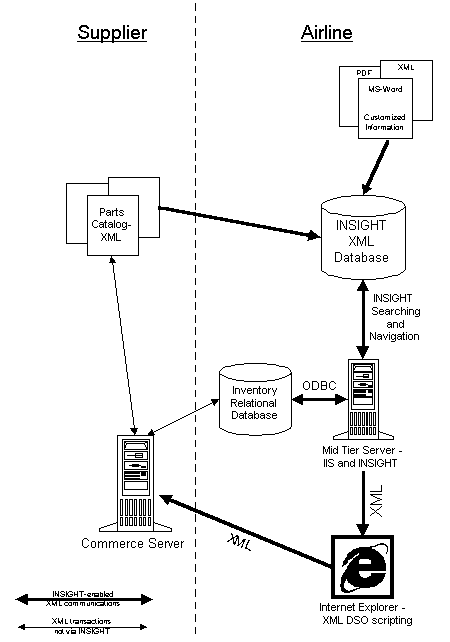

|
| ||
|
| ||
June 26, 1998
The Business Problem
The Role of XML
Solving the Problem with Enigma INSIGHT and XML
Situation Overview
User Scenario
Behind the Curtain
XML Example
Information Flow Diagram
An airline currently suffers from excessive equipment down time and high maintenance costs caused by manual and non-integrated information processes. Service engineers have to separately search and manually integrate data from flat files, relational databases, and remote supplier parts catalogs. This is cumbersome and time-consuming because first they have to identify the problem using data from various sources, and then access a separate system to find inventory data and a third system to process an order for new parts from the supplier. Furthermore, the ordering process is manual.
Because this information is not linked or intelligent, it results in:
Airlines and airplane manufacturers are transitioning from a world of "deliver read-only data" to a world of "integrate data and deliver." This shift enables the airline to effectively add customized parts information to manufacturer parts catalogs, creating an intelligent business commerce system, rather than islands of disparate information.
XML is used as the means of communicating between these data sources, enabling intelligent information to be delivered directly to the browser desktop of the end-user. For example, because a parts list is delivered in XML format with a part number tag (<PART-NUM>), the INSIGHT product from Enigma (http://www.enigmainc.com/  ) can automatically launch a search in the company's materials database, and can also order the part directly from the manufacturer if it is not available. The display and actions performed depend upon the content of the tags and the needs of the particular user.
) can automatically launch a search in the company's materials database, and can also order the part directly from the manufacturer if it is not available. The display and actions performed depend upon the content of the tags and the needs of the particular user.
Since XML is the meta-data standard for both the company's various databases and for the supplier catalog, the user has access to intelligent maintenance data, and the parts fulfillment process becomes automated. In addition, the on-going compilation of multiple maintenance reference data is automated.
This scenario describes a system built with Enigma's INSIGHT that gives maintenance engineers simultaneous access to all relevant data and an automated ordering system. XML data is used to intelligently link various sources of reference data, suppliers' parts catalogs, and ordering processes. INSIGHT integrates the data and delivers it to the appropriate destinations, including the commerce system for ordering and execution. Thus productivity is increased; ordering is done on a timely basis; and aircraft down times are decreased.
A service engineer for Airline X discovers that a seat support on the aircraft is broken. From her browser she searches for all information about "seat support" by focusing her search on "PART-NAME". The information (a combination of text, graphics, and numeric data) is retrieved immediately.
Clicking on a picture of the part brings up a dynamic "document" showing all the relevant information available at this specific time. The service engineer sees the part description, installation instructions, a series of cautions about installing the part in particular planes, and a button to get inventory and pricing information.
The engineer now clicks an "inventory check" button, which shows that the part is in bin 242. Since it is the last one in stock, the system recommends that more stock be ordered from the manufacturer. She walks over and gets the part and then initiates an order.
She then clicks a button to initiate an order directly from the airplane supplier. She is presented with a form, which she fills out and submits. Confirmation is returned that her order has been received.
If the part is not in stock, she clicks on the pricing and is shown pricing information, delivery times and whether or not the part has changed since it was last ordered. She then has the option of ordering it through a form as in (5).
Part information
<?xml version="1.0"?>
<PART>
<PARTLIST>
<PART-NUM>12983</PART-NUM>
<PART-NAME>SEAT SUPPORT</PART-NAME>
<UNITS-PER-ASSEMBLY>1</UNITS-PER-ASSEMBLY>
</PARTLIST>
<INSTALL-INFO>
<SUPPLIER-NOTE>The installation of the seat support should be performed
only after the entire seat unit is removed from the floor base.
</SUPPLIER-NOTE>
<AIRLINE-CAUTION> Airline X has personal TV's in every seat back, so
be sure to disconnect the TV wiring prior to removing
the broken support.
</AIRLINE-CAUTION>
</INSTALL-INFO>
</PART>
Inventory Information
<?xml version="1.0"?>
<INVENTORY>
<PART-NUM>12983</PART-NUM>
<PART-NAME>SEAT SUPPORT</PART-NAME>
<LOCAL-INVENTORY>
<AVAILABLE>1</AVAILABLE>
<LOCATION>BIN 242</LOCATION>
</LOCAL-INVENTORY>
<SUPPLIER>
<NAME>General Aerospace</NAME>
<COMMERCE-SERVER-URL>http://commerce.general-aerospace.com
</COMMERCE-SERVER-URL>
</SUPPLIER>
</INVENTORY>
</PART>

Did you find this material useful? Gripes? Compliments? Suggestions for other articles? Write us!
© 1999 Microsoft Corporation. All rights reserved. Terms of use.